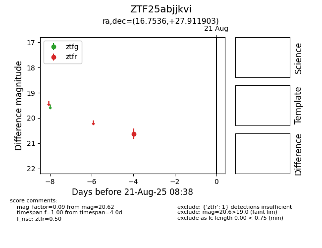

Target ZTF25abjjkvi at 2025-08-21 08:38, see:
FINK: fink-portal.org/ZTF25abjjkvi
Lasair: lasair-ztf.lsst.ac.uk/objects/ZTF25abjjkvi
ALeRCE: alerce.online/object/ZTF25abjjkvi
alt names
ZTF25abjjkvi (ztf,alerce)
coordinates:
equatorial (ra, dec) = (16.7536,+27.91190)
galactic (l, b) = (127.1247,-34.83300)
photometry
last ztfr=20.62
1 ztfr detections
